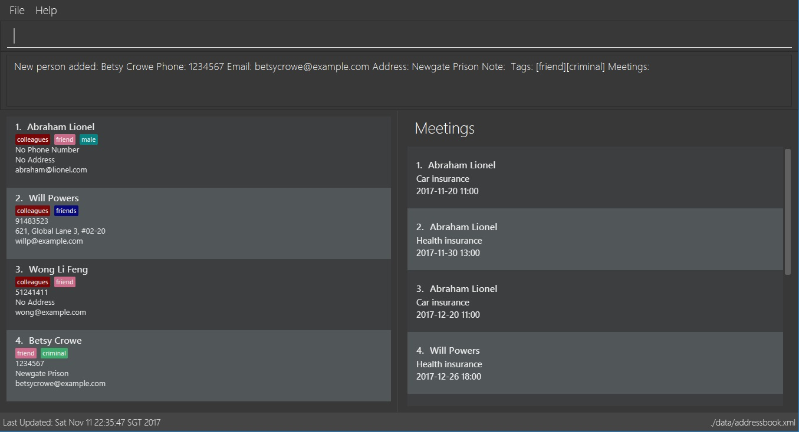
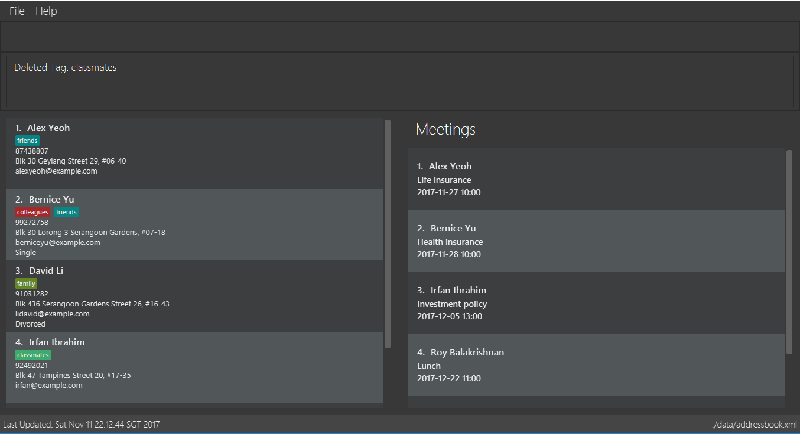
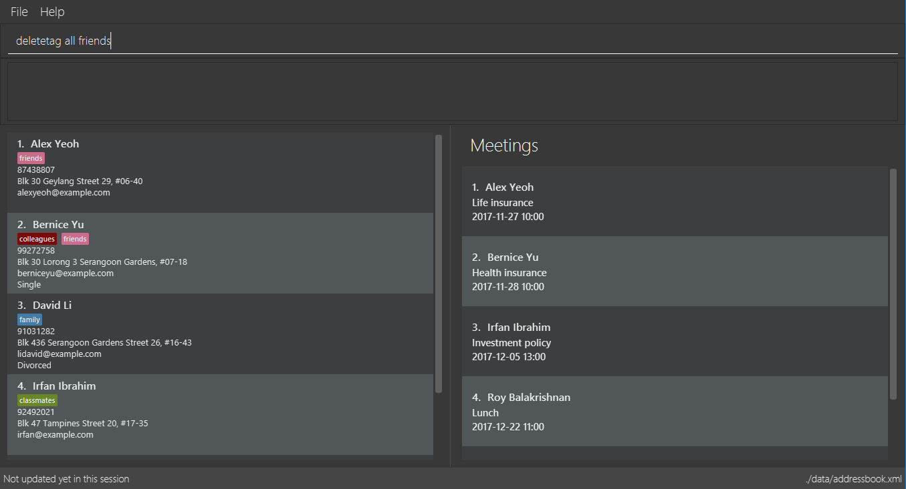
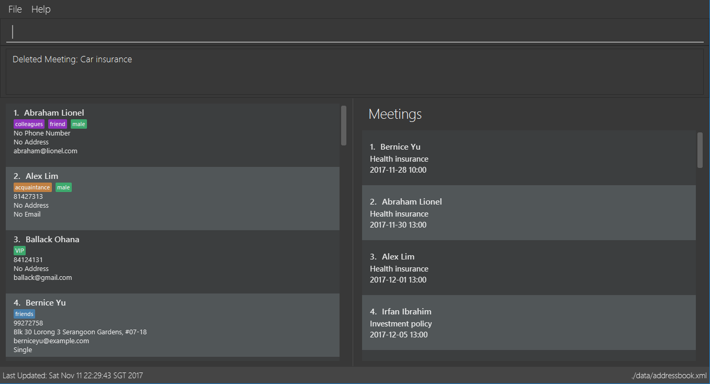
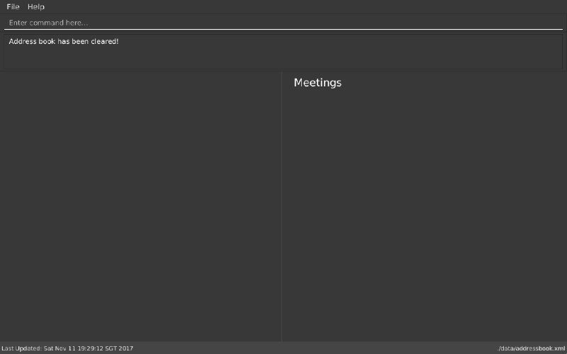
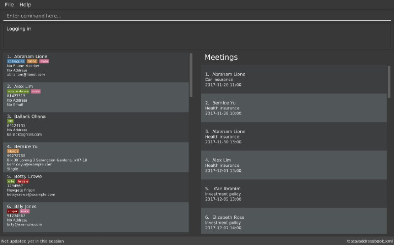
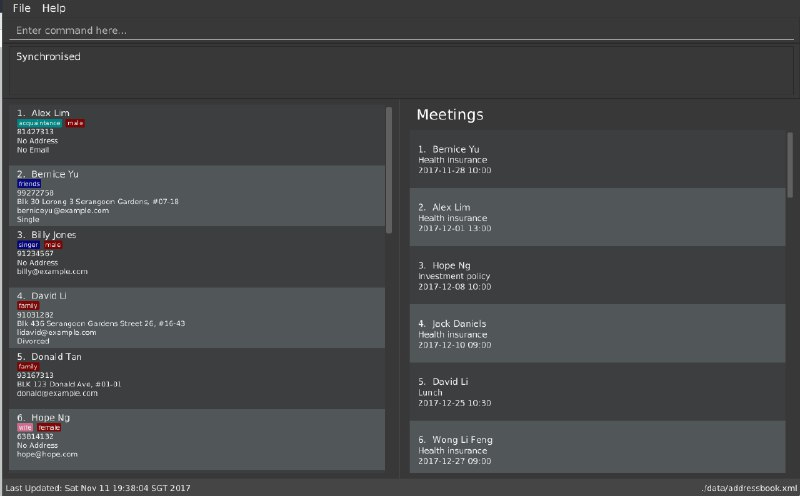
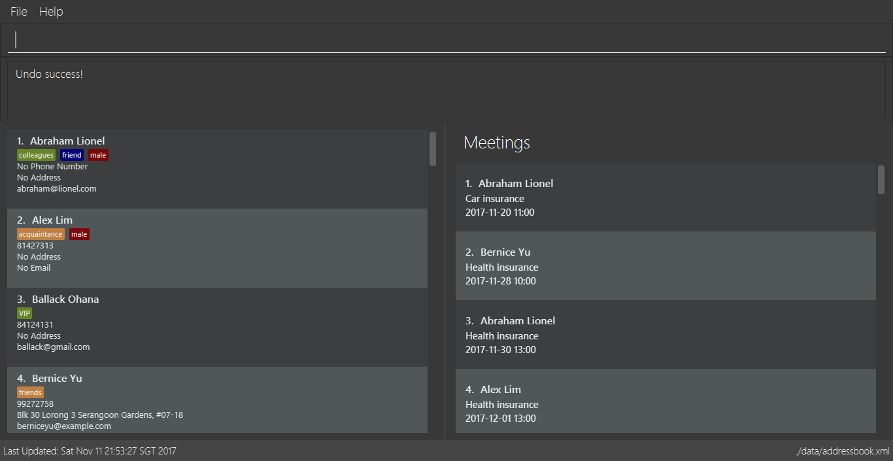
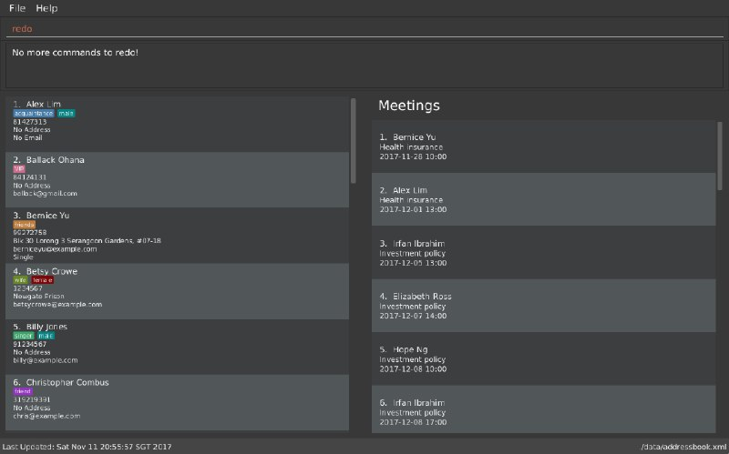

By: Team W13-B3 Since: Jun 2016 Licence: MIT
- 1. Product Overview
- 2. About
- 3. Quick Start
- 4. Features
- 4.1. Viewing help :
help - 4.2. Adding a person:
add - 4.3. Listing all persons :
list - 4.4. Locating persons by keywords:
find - 4.5. Sorting contact list:
sort - 4.6. Deleting a person :
delete - 4.7. Editing a person :
edit - 4.8. Adding a tag to a person :
addtag - 4.9. Deleting a tag :
deletetag - 4.10. Adding a meeting to a person :
addmeeting - 4.11. Deleting a meeting :
deletemeeting - 4.12. Selecting a person :
select - 4.13. Making a note:
note - 4.14. Clearing all entries :
clear - 4.15. Creating a backup :
backup - 4.16. Restoring a backup :
restore - 4.17. Logging in to Google Contacts:
login - 4.18. Synchronising with Google Contacts :
sync - 4.19. Logging out of Google Contacts :
logout - 4.20. Listing entered commands :
history - 4.21. Undoing previous command :
undo - 4.22. Redoing the previously undone command :
redo - 4.23. Resizing the main window :
resize - 4.24. Exiting the program :
exit - 4.25. Saving the data
- 4.1. Viewing help :
- 5. Changelog
- 6. Coming in Version 2.0
- 7. FAQ
- 8. Command Summary/ Cheatsheet
1. Product Overview
Product Name: ABC Business Contacts
Version: 1.5
ABC is a free desktop contact management application that helps you manage your large collection of contacts conveniently and keep track of your appointments. Most of the user interactions happen using a Command Line Interface (CLI), and it also provides a Graphical User Interface (GUI). You can store contacts as well as other information and retrieve them efficiently with the help of ABC.
ABC is available for the Linux, Unix, Windows 10, and Mac OS X operating systems.
2. About
This User Guide introduces a detailed description of the various features that are available in ABC. Being familiar with CLI is helpful but not necessary, as this guide is simple and easy to understand. Following this guide will allow you to use ABC without difficulty. At the end of this User Guide, there is a summary of all the commands, giving you a quick overview on how to use all the features.
3. Quick Start
-
Ensure you have Java version
1.8.0_60or later installed on your computer.This app will not work with earlier versions of Java 8. -
Download the latest
ABC.jarhere. -
Copy the file to the folder you want to use as the home folder for your ABC.
-
Double-click the file to start the app. The GUI should appear in a few seconds. (See Figure 3.1 for a labelled version of the GUI)
Figure 3.1 -
Type the command in the command box and press Enter to execute it.
e.g. typinghelpand pressing Enter will open the help window. -
Here are some example commands you can try:
-
>> list: lists all contacts -
>> add n/John Doe p/98765432 e/johnd@example.com a/John street, block 123, #01-01: adds a contact namedJohn Doeto your ABC -
>> delete 3: deletes the 3rd contact shown in the current list -
>> exit: exits the app
-
-
Refer to the Features section below for details of each command.
4. Features
This section aims to help you understand the features in ABC. It contains a detailed write up for all the commands available. At the start of every section, a box summarizing the command is provided. Here are some general guidelines on entering commands in ABC:
Command Format
-
Commands can be substituted with their shorthand aliases e.g the
addcommand can be substituted fora. -
Words in
UPPER_CASEare the parameters to be supplied by the user e.g. inadd n/NAME, whereNAMEis a parameter which can be used asadd n/John Doe. -
Items in square brackets are optional e.g.
n/NAME [t/TAG]can be used asn/John Doe t/friendor asn/John Doe. -
Items that comes before
… can have multiple entries e.g.[t/TAG]…can be used ast/friend,t/friend t/familyetc. -
Index refers to the index number shown in the most recent listing. The index must be a positive integer e.g. 1, 2, 3, …
-
Suggestions will pop up for partial words keyed in. Press TAB to auto-complete using the first suggestion or press ↑↓ arrows and Enter to choose the suggestion.
4.1. Viewing help : help
Command Name: help
Shorthand Alias: hp
Function: Displays the User Guide
Format: help
If you want to view the User Guide:
-
Type in
>> help
(See Figure 4.1.1)
Figure 4.1.1 -
Press Enter and this User Guide document will show up
4.2. Adding a person: add
Command Name: add
Shorthand Alias: a
Function: Adds a person to ABC
Format: add n/NAME [p/PHONE_NUMBER] [e/EMAIL] [a/ADDRESS] [t/TAG]…
| A person can have any number of tags (including 0) |
Parameters can be in any order e.g. n/NAME p/PHONE_NUMBER, p/PHONE_NUMBER n/NAME are equivalent
|
If you want to add a new contact to your ABC:
-
Type in
>> add n/Betsy Crowe t/friend e/betsycrowe@example.com a/Newgate Prison p/1234567 t/criminal
(See Figure 4.2.1)

Figure 4.2.1 -
Press Enter and you should see that a new contact has been added
(See Figure 4.2.2)

Figure 4.2.2
Here are some other ways you can add contacts:
-
>> add n/John Doe p/98765432 e/johnd@example.com a/John street, block 123, #01-01 -
>> add n/Betsy Crowe t/friend e/betsycrowe@example.com a/Newgate Prison p/1234567 t/criminal -
>> add n/Jack Daniels -
>> a n/John Watson p/83331122 e/johnw@example.com a/John Avenue, block 2, #01-01 -
>> a n/Dave
4.3. Listing all persons : list
Command Name: list
Shorthand Alias: l
Function: Lists all contacts in ABC
Format: list
You can view all your contacts by following the steps below:
-
Type in
>> list
(See Figure 4.3.1)
Figure 4.3.1 -
Press Enter and you should see a list of all your contacts
(See Figure 4.3.2)
Figure 4.3.2
4.4. Locating persons by keywords: find
Command Name: find
Shorthand Alias: f
Function : Displays a filtered list of persons whose specified fields contain any of the given keywords
Format: find [n/KEYWORD…] [p/KEYWORD…] [e/KEYWORD…] [a/KEYWORD…] [t/KEYWORD…]
| There must be at least one argument |
If you want to find a person named John Watson:
-
Type in
>> find n/john
(See Figure 4.4.1)
Figure 4.4.1 -
Press Enter and you should see a list of persons having the name
john
(See Figure 4.4.2)
Figure 4.4.2
Here are some other ways you can use find:
-
>> find t/friends family p/88887777
Lists any person having tagsfriendsorfamilyor whose phone number is88887777. -
>> f e/*@example.com
Lists any person whose email domain isexample.com. -
>> find n/steph?n
Lists persons whose name isstephanorstephen.
4.5. Sorting contact list: sort
Command Name: sort
Shorthand Alias: s
Function: Sorts the contact list in alphabetical order by a given FIELD
Format: sort FIELD
Only one FIELD (NAME, PHONE, ADDRESS, EMAIL, TAG, MEETING) can be used at a time
|
For fields with multiple entries (TAG, MEETING), contacts will be sorted based on the entry that comes first alphabetically
|
If you would like to sort your contact list:
-
Type in the
FIELDto sort your contact list by
>> sort name
(See Figure 4.5.1)

Figure 4.5.1 -
Press Enter and your contact list will be sorted
(See Figure 4.5.2)

Figure 4.5.2
Here are some other ways to sort your contact list:
-
>> sort phone
Sorts the contact list by phone number. -
>> s tag
Sorts the contact list by tag. -
>> sort meeting
Sorts the contact list by meeting time.
4.6. Deleting a person : delete
Command Name: delete
Shorthand Alias: d
Function: Deletes the specified person at the specified INDEX from your ABC
Format: delete INDEX
If you want to delete a contact in your ABC:
-
Locate the contact and take note of its index
-
Type in the command to delete the contact at the index
>> delete 1
(See Figure 4.6.1)

Figure 4.6.1 -
Press Enter and you should see that the selected contact has been deleted
(See Figure 4.6.2)

Figure 4.6.2
You can also delete contacts in a filtered list:
-
>> list
>> delete 2
Deletes the 2nd person in the contact list. -
>> find n/Betsy
>> delete 1
Deletes the 1st person from the result of thefindcommand. -
>> find t/friends
>> d 4
Deletes the 4th person from the result of thefindcommand.
4.7. Editing a person : edit
Command Name: edit
Shorthand Alias: e
Function: Edits the person at the specified INDEX
Format: edit INDEX [n/NAME] [p/PHONE] [e/EMAIL] [a/ADDRESS] [t/TAG]…
| A person can have any number of tags (including 0) |
Parameters can be in any order e.g. n/NAME p/PHONE_NUMBER, p/PHONE_NUMBER n/NAME are equivalent
|
| You must provide at least one of the optional fields |
If you want to change the details of a contact in your ABC:
-
Locate the contact you want to edit and take note of its index
-
Type in the index of the contact and the details you wish to replace
>> edit 1 p/91234567 e/johndoe@example.com
(See Figure 4.7.1)

Figure 4.7.1 -
Press Enter and you should see that the contact selected has been modified
(See Figure 4.7.2)

Figure 4.7.2
| Existing values will be updated to the input values |
You can also edit contacts in a filtered list:
-
>> find t/friends
>> edit 2 n/Betsy Crower t/
Edits the name of the 2nd person from the result of thefindcommand toBetsy Crowerand clears all existing tags.
You can remove all the person’s tags by typing t/ without specifying any tags after it
|
-
>> find n/Betsy
>> e 1 t/friend
Edits the tag of the 1st person from the result of thefindcommand.
|
When you edit tags, the existing tags of the person will be removed |
4.8. Adding a tag to a person : addtag
Command Name: addtag
Shorthand Alias: at
Function: Adds a tag to an existing person at the specified INDEX in your ABC
Format: addtag INDEX TAG
| Only one tag can be added at a time |
| Special characters will not be accepted e.g !, @, #, … |
If you want to add a single tag to a contact in your ABC:
-
Locate the contact you want to add a tag to and take note of its index
-
Type in the index of the contact, and the tag you wish to add
>> addtag 1 classmates
(See Figure 4.8.1)

Figure 4.8.1 -
Press Enter and you should see that the contact selected has been modified
(See Figure 4.8.2)

Figure 4.8.2
You can also add tags to a contact in a filtered list:
-
>> find t/friends
>> addtag 2 friends
Adds thefriendstag to the 2nd person from the result of thefindcommand. -
>> find n/John
>> at 1 9pmclass
Adds the9pmclasstag to the 1st person from the result of thefindcommand.
4.9. Deleting a tag : deletetag
Command Name: deletetag
Shorthand Alias: dt
Function: Deletes the specified tag from a specified person or all persons in your ABC
Format: deletetag INDEX TAG
If you want to delete a single tag from a contact in your ABC:
-
Locate the contact you want to delete a tag from and take note of its index
-
Type in the index of the contact and the tag you wish to delete
>> deletetag 1 classmates
(See Figure 4.9.1)

Figure 4.9.1 -
Press Enter and you should see that the contact selected has been modified
(See Figure 4.9.2)

Figure 4.9.2
You can also delete tags from a contact in a filtered list:
-
>> find t/friends
>> deletetag 2 friends
Deletes thefriendstag from the 2nd person from the result of thefindcommand. -
>> find n/John
>> dt 1 9pmclass
Deletes the9pmclasstag from the 1st person from the result of thefindcommand.
If you would like to delete all instances of a particular tag from your ABC:
-
Type in
all, followed by the tag you wish to delete
>> deletetag all friends
(See Figure 4.9.3)

Figure 4.9.3 -
Press Enter and you should see that this tag has been deleted from all contacts
(See Figure 4.9.4)

Figure 4.9.4
4.10. Adding a meeting to a person : addmeeting
Command Name: addmeeting
Shorthand Alias: am
Function: Adds a meeting to a specified person in your ABC
Format: addmeeting MEETING_NAME/MEETING_TIME
MEETING_TIME must be in the format YYYY-MM-DD HH:MM
|
If you want to add a meeting to a contact in your ABC:
-
Locate the contact you want to add a meeting to and take note of its index
-
Type in the index of the contact, the name of the meeting and the time of the meeting you wish to add
>> addmeeting 1 class lunch/2017-11-20 12:00
(See Figure 4.10.1)

Figure 4.10.1 -
Press Enter and you should see that the contact that you selected has been modified
(See Figure 4.10.2)

Figure 4.10.2
You can also add meetings to a contact in a filtered list:
-
>> find t/friends
>> addmeeting 2 breakfast/2017-12-15 10:00
Adds a meeting namedbreakfastat2017-12-15 10:00to the 2nd person from the result of thefindcommand.
4.11. Deleting a meeting : deletemeeting
Command Name: deletemeeting
Shorthand Alias: dm
Function: Deletes the specified meeting in the meeting list from your ABC
Format: deletemeeting INDEX
If you want to delete a meeting in your ABC:
-
Locate the meeting you want to delete and take note of its index
-
Type in the index of the meeting to be deleted
>> deletemeeting 1
(See Figure 4.11.1)

Figure 4.11.1 -
Press Enter and you should see that the selected meeting has been deleted
(See Figure 4.11.2)

Figure 4.11.2
You can also delete a contact in a filtered list:
-
>> list
>> deletemeeting 2
Deletes the 2nd meeting in ABC. -
>> find n/Betsy
>> deletemeeting 1
Deletes the 1st meeting from the result of thefindcommand. -
find t/friends
>> dm 4
Deletes the 4th meeting from the result of thefindcommand.
4.12. Selecting a person : select
Command Name: select
Shorthand Alias: sl
Function: Selects a contact with the specified INDEX
Format: select INDEX
You can select a contact from the displayed list by following the steps below:
-
Type in
>> select 1
(See Figure 4.12.1)
Figure 4.12.1 -
Pressing Enter and your choice should now be selected
(See Figure 4.12.2)

Figure 4.12.2
Here is another way to select a contact:
-
>> s 1
You can also select a contact in a filtered list:
-
>> list
>> select 2
Selects the 2nd person in ABC. -
>> find n/Betsy
>> select 1
Selects the 1st person from the result of thefindcommand. -
>> list
>> s 7
Selects the 7th person in ABC.
4.13. Making a note: note
Command Name: note
Shorthand Alias: n
Function: Inserts a NOTE for the contact specified by INDEX in the ABC
Format: note INDEX [NOTE]
| Each contact can have at most 1 note |
NOTE can be blank to delete existing note, i.e. note 1
|
If you want to add a note for a contact:
-
Locate the contact and take note of its index
-
Type in your desired INDEX and NOTE
>> note 1 This is an important note
(See Figure 4.13.1)
Figure 4.13.1 -
Press Enter and your note should appear as the last row in your contact’s details
(See Figure 4.13.2)

Figure 4.13.2
Here are some other ways to change your ABC contact’s note:
-
>> note 2
Removes the existing note from the 2nd person -
>> n 3 This is a note
Changes the 3rd contact’s note to "This is a note" -
>> n 3
Removes the existing note from the 3rd person
4.14. Clearing all entries : clear
Command Name: clear
Shorthand Alias: c
Function: Clears all existing contacts in the ABC
Format: clear
You can also clear all ABC contacts. To do so:
-
Type in
>> clear
(See Figure 4.14.1)

Figure 4.14.1 -
Press Enter and your contacts should now be cleared
(See Figure 4.14.2)

Figure 4.14.2
4.15. Creating a backup : backup
Command Name: backup
Shorthand Alias: b
Function: Creates a backup file that stores the data in ABC
Format: backup
If you want to backup your data:
-
Type in
>> backup
(See Figure 4.15.1)

Figure 4.15.1 -
Press Enter and you should see a message indicating the successful backup of your data
(See Figure 4.15.2)

Figure 4.15.2
| Your data is automatically backed up every time you close ABC |
4.16. Restoring a backup : restore
Command Name: restore
Shorthand Alias: rb
Function: Retrieves data from a backup file and restore it in ABC
Format: restore
There must be a backup file in the default file path for restore command to work
|
If you encounter an unforeseen circumstance and want to revert to a backup:
-
Type in
>> restore
(See Figure 4.16.1)

Figure 4.16.1 -
Press Enter and you should see that the backup data is restored
(See Figure 4.16.2)

Figure 4.16.2
4.17. Logging in to Google Contacts: login
Command Name: login
Shorthand Alias: li
Function: Logs in to Google Contacts
Format: login
It is mandatory to execute this command before running sync
|
If you would like to login to Google Contacts:
-
Type in
>> login
(See Figure 4.17.1)

Figure 4.17.1 -
Press Enter and your default browser should open a login window
(See Figure 4.17.2)

Figure 4.17.2 -
Enter your login details and press Next
(See Figure 4.17.3)

Figure 4.17.3 -
Allow ABC to access your Google Contacts information
(See Figure 4.17.4)
Figure 4.17.4
4.18. Synchronising with Google Contacts : sync
Command Name: sync
Shorthand Alias: sy
Function: Synchronises your contacts with Google Contacts after authentication
Format: sync
| A browser is necessary for logging in to Google |
You have to run the login command before you can run sync
|
You can easily synchronise your ABC contacts with Google Contacts through the following steps:
-
Type in
>> sync
(See Figure 4.18.1)

Figure 4.18.1 -
Your contacts are now synchronised
(See Figure 4.18.2 and 4.18.3)

Figure 4.18.2

Figure 4.18.3
4.19. Logging out of Google Contacts : logout
Command Name: logout
Shorthand Alias: lo
Function: Logs out of your linked Google Account after you have logged in
Format: logout
| You should only use this command if you would like to log out of your linked Google account |
You can log out of your linked Google Account by doing the following:
-
Type in
>> logout
(See Figure 4.19.1)
Figure 4.19.1 -
You are now logged out
(See Figure 4.19.2)
Figure 4.19.2
4.20. Listing entered commands : history
Command Name: history
Shorthand Alias: hx
Function: Lists all the commands that you have entered in reverse chronological order
Format: history
| Pressing the ↑ and ↓ arrows will display the previous and next input respectively in the command box. |
If you want to view the list of commands entered:
-
Type in
>> history
(See Figure 4.20.1)
Figure 4.20.1 -
Press Enter and the list of commands that you entered before would show up
(See Figure 4.20.2)
Figure 4.20.2
4.21. Undoing previous command : undo
Command Name: undo
Shorthand Alias: u
Function: Restores the application to the state where the previous undoable command was not executed
Format: undo
|
Undoable commands: those commands that modify the application’'s content |
When you delete a contact by accident:
-
Remove the first contact
>> delete 1
(See Figure 4.21.1)

Figure 4.21.1 -
Type in the
undocommand
>> undo
(See Figure 4.21.2)

Figure 4.21.2 -
Press Enter and you should see that the effects of
delete 1has been reverted
(See Figure 4.21.3)

Figure 4.21.3
The following are more examples to help you better understand the undo command:
-
Failure to
undoas there are no undoable commands executed previously:-
Restart ABC and select the first contact
>> select 1
(See Figure 4.21.4)

Figure 4.21.4 -
List all the contacts
>> list
(See Figure 4.21.5)

Figure 4.21.5 -
Type in
undoand you will see an error message
>> undo
(See Figure 4.21.6)

Figure 4.21.6
-
-
Attempting to
undomultiple commands:-
Delete the first contact
>> delete 1
(See Figure 4.21.7)

Figure 4.21.7 -
Clear out all the contacts
>> clear
(See Figure 4.21.8)

Figure 4.21.8 -
Type in the shorthand alias for
undo
>> u
(See Figure 4.21.9)

Figure 4.21.9 -
Press Enter and you should see that the
clearcommand is reverted
(See Figure 4.21.10)
Figure 4.21.10 -
Type in
undoand you should see that thedelete 1command is reverted as well
>> undo
(See Figure 4.21.11)

Figure 4.21.11
-
4.22. Redoing the previously undone command : redo
Command Name: redo
Shorthand Alias: r
Function: Reverts the most recent undo command
Format: redo
If you delete a contact and undo the delete by mistake:
-
Type in the command to delete the first contact
>> delete 1
(See Figure 4.22.1)

Figure 4.22.1 -
Press Enter and the contact is removed
(See Figure 4.22.2)

Figure 4.22.2 -
Type in
undoby mistake
>> undo
(See Figure 4.22.3)

Figure 4.22.3 -
Enter the command
redoto revert theundocommand
>> redo
(See Figure 4.22.4)

Figure 4.22.4 -
Press Enter and you should see that the
undocommand has been reverted and the contact remains deleted
(See Figure 4.22.5)

Figure 4.22.5
The following are more examples to help you better understand the redo command:
-
Failure to
redoas there are noundocommands executed previously:-
Select a contact to delete
>> delete 1
(See Figure 4.22.6)

Figure 4.22.6 -
Type in the
redocommand
>> redo
(See Figure 4.22.7)

Figure 4.22.7 -
Press Enter and you should see an error message
(See Figure 4.22.8)

Figure 4.22.8
-
-
Attempting to
redomultiple commands:-
Select a contact to delete
>> delete 1
(See Figure 4.22.9)

Figure 4.22.9 -
Remove all the contacts by
clearcommand
>> clear
(See Figure 4.22.10)

Figure 4.22.10 -
Type in
undoto revert theclearcommand
>> undo
(See Figure 4.22.11)

Figure 4.22.11 -
Type in
undoto revert thedelete 1command
>> undo
(See Figure 4.22.12)
Figure 4.22.12 -
Type in
redoto reapply thedelete 1command
>> redo
(See Figure 4.22.13)

Figure 4.22.13 -
Type in
redoto reapply theclearcommand
>> redo
(See Figure 4.22.14)

Figure 4.22.14
-
4.23. Resizing the main window : resize
Command Name: resize
Shorthand Alias: rs
Function: Resizes the main window to the specified width and height in pixels
Format: resize WIDTH HEIGHT
Restriction on WIDTH and HEIGHT: 300 < = WIDTH < = width of the screen display, 230 < = HEIGHT < = height of the screen display
|
You CANNOT undo a resize command
|
If you want to resize your main window to 1280 * 720:
-
Type in
>> resize 1280 720
(See Figure 4.23.1)

Figure 4.23.1 -
Press Enter and the main window will be resized to 1280 * 720
4.24. Exiting the program : exit
Command Name: exit
Shorthand Alias: q
Function: Exits the ABC
Format: exit
If you want to close ABC:
-
Type in the command.
>> exit
(See Figure 4.24.1)

Figure 4.24.1 -
Press Enter and you will see that ABC is closed.
4.25. Saving the data
ABC data is saved in the hard disk automatically after any command that changes the data.
There is no need to save manually.
5. Changelog
The changelog contains features and improvements added in different major updates of ABC.
5.1. Version 1.5
-
Smarter Auto-Completion
-
Adding and deleting of meetings
-
Find now works on all fields
-
Synchronisation now checks if Google Contacts are valid
-
Restore now includes meetings
-
Reworking of commands to handle meetings correctly
5.2. Version 1.4
-
Display meetings in UI
-
Auto-Completion
-
Sorting of contacts
-
Google People API Synchronization
5.3. Version 1.3
-
Add a person without all his/her parameters
-
Confirmation for restoring a backup
-
Wildcard
*for searching of contacts -
Meetings
5.4. Version 1.2
-
Adding and deleting of tags
-
Resize window size
-
Restore to a backup
-
Synchronise with Google Contacts
6. Coming in Version 2.0
-
Access a contact’s Facebook profile
-
Get direction to a contact’s address
-
Upload pictures
-
Theme and plugin manager
-
Add and view Favourites
-
Email contacts directly in ABC
-
Colour coded meetings based on time left until meeting
-
Specify path for backup copies
-
Autocompletion ranks suggestions based on usage
-
Filter meetings by month or year
7. FAQ
Q: How do I transfer my data to another Computer?
A: Install the app in the other computer and overwrite the empty data file it creates with the file that contains the data of your previous ABC folder.
Q: I can’t sync my contacts with my Google contacts!
A: Make sure you have a default browser enabled as attempting to sync your data
will open up a new window in your default browser.
Q: I have a question that isn’t answered here. How do I get further support?
A: You can contact us by email
. (cs2103tw13b3@gmail.com)
8. Command Summary/ Cheatsheet
| Command | Alias | Format |
|---|---|---|
Add |
|
|
Add Meeting |
|
|
Add Tag |
|
|
Backup |
|
|
Clear |
|
|
Delete |
|
|
Delete Meeting |
|
|
Delete Tag |
|
|
Edit |
|
|
Exit |
|
exit |
Find |
|
|
Help |
|
|
History |
|
|
List |
|
|
Login |
|
|
Logout |
|
|
Note |
|
|
Redo |
|
|
Resize |
|
|
Restore Backup |
|
|
Select |
|
|
Sort |
|
|
Synchronise with Google Contacts |
|
|
Undo |
|
|